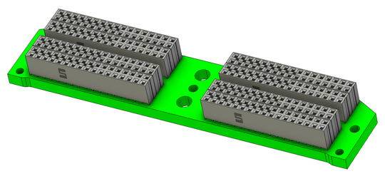
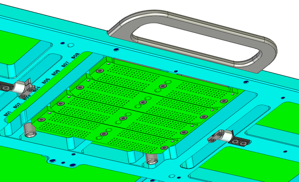
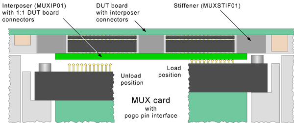
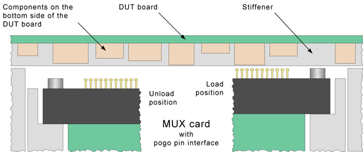

MUX cards interposer (MUXIP01)
The interposer is the interface between the pogo pins of the MUX cards and the DUT board. It is mounted on the bottom side of the DUT board and features the DUT board connectors and the pogo pads for two MUX cards.
The interposer features a one-to-one connection from the MUX cards to the DUT board. The compatibility with existing or new DUT boards without connection to MUX cards is provided by the interposer. Components with a height up to the stiffener height can be placed in the related area of these DUT boards.

The top side of the interposer is connected to the DUT board via standard 100 mil connectors. Pads for the pogo pins of the MUX cards are located at the bottom side of the interposer.
Installation
The drawing below shows four interposer modules mounted on the bottom side of the MUX cards stiffener (MUXSTIF01).

Principle of operation
The drawing below shows how the interposer connects the MUX cards to the DUT board. The left side of the drawing shows the MUX card with the DUT board docking mechanism set to the unload position. The right side shows the card in the load position. The pogo interface of the card is connected to the interposer of the DUT board if the DUT board docking mechanism is in the load position.

The next drawing shows how DUT boards that do not use MUX cards or the MUXSTIF01 stiffener can be operated on systems with integrated MUX cards. Components up to the height of the stiffener can be assembled in the area above the MUX cards.

Design data
Refer to MUX cards design data for the detailed design data of the interposer.
Functional changes
- Introduced in SmarTest 7.3.2 / 8.1.2